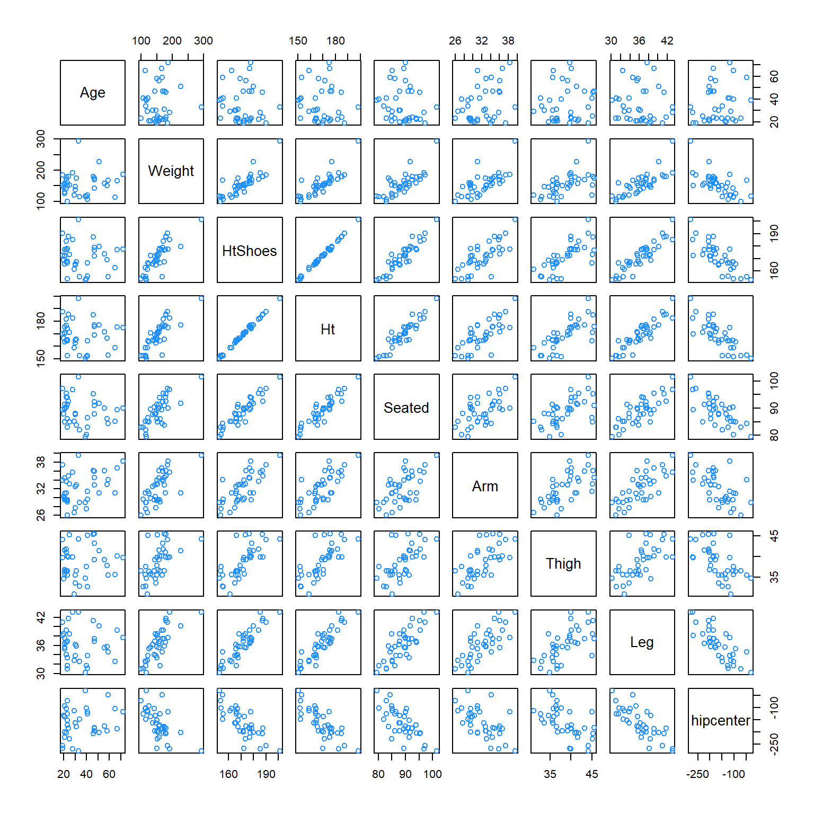
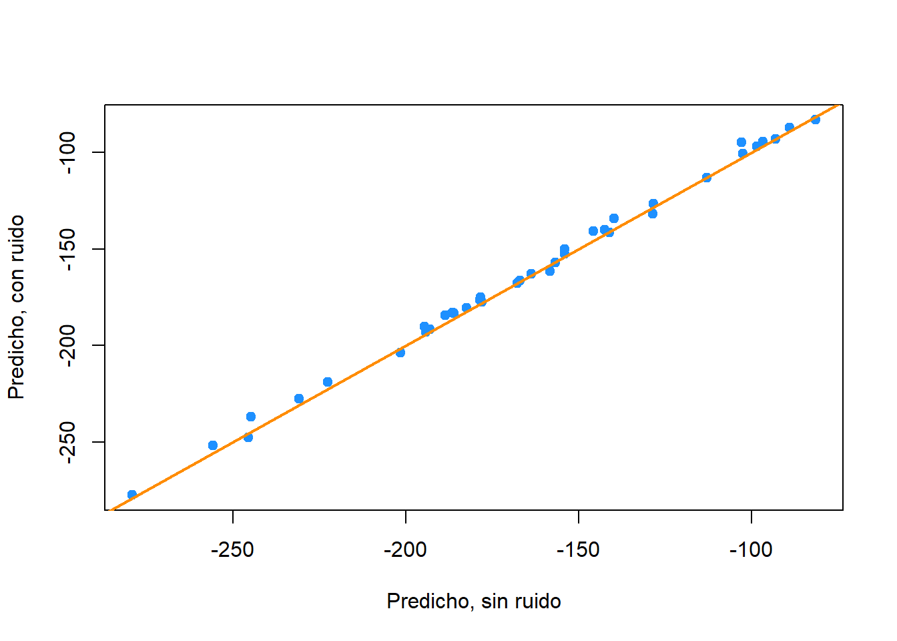
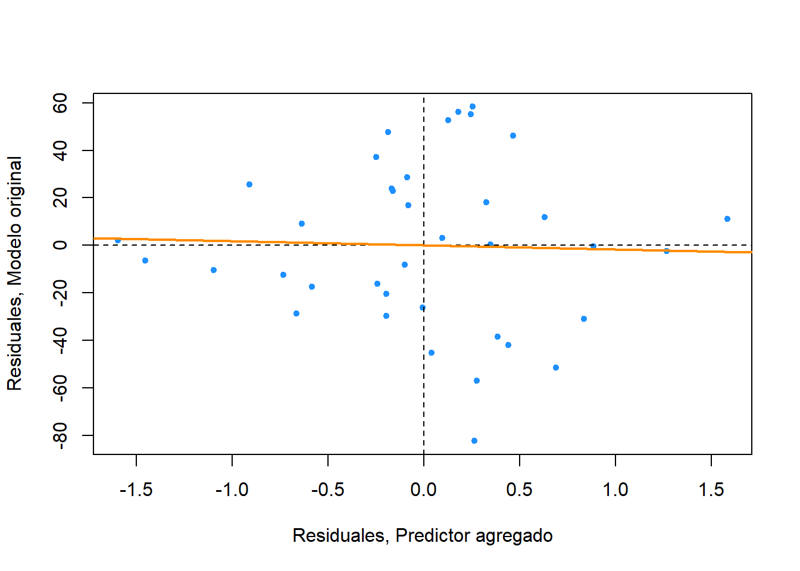
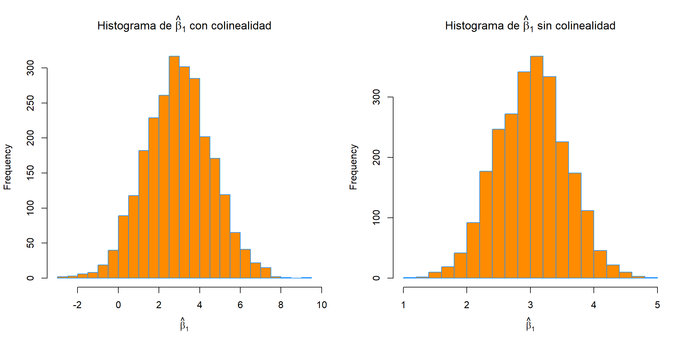
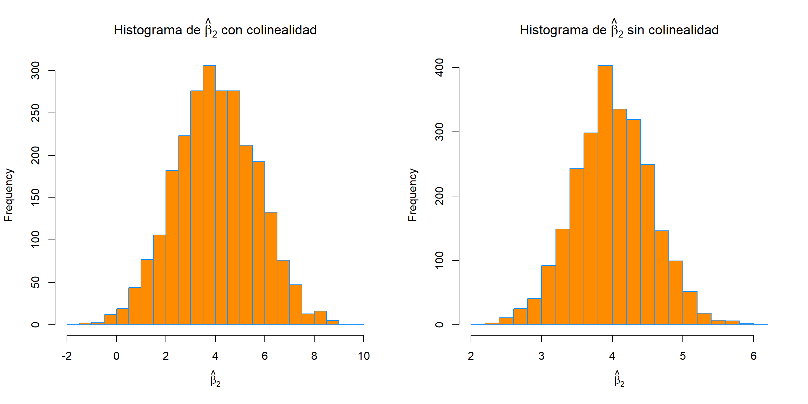
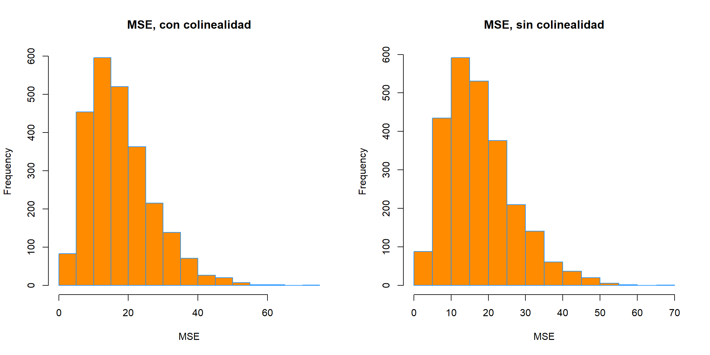

Capítulo 20 Colinealidad
“Si me veo confundido es porque estoy pensando.”
— Samuel Goldwyn
Después de leer este capítulo, podrá:
- Identificar colinealidad en regresión.
- Comprender el efecto de la colinealidad en modelos de regresión.
20.1 Colinealidad exacta
Creamos un conjunto de datos donde uno de los predictores, \(x_3\), sea una combinación lineal de los otros predictores.
gen_exact_collin_data = function(num_samples = 100) {
x1 = rnorm(n = num_samples, mean = 80, sd = 10)
x2 = rnorm(n = num_samples, mean = 70, sd = 5)
x3 = 2 * x1 + 4 * x2 + 3
y = 3 + x1 + x2 + rnorm(n = num_samples, mean = 0, sd = 1)
data.frame(y, x1, x2, x3)
}Observe que la forma en que estamos generando estos datos, la respuesta \(y\) solo depende realmente de \(x_1\) y \(x_2\).
set.seed(42)
exact_collin_data = gen_exact_collin_data()
head(exact_collin_data)## y x1 x2 x3
## 1 170.7135 93.70958 76.00483 494.4385
## 2 152.9106 74.35302 75.22376 452.6011
## 3 152.7866 83.63128 64.98396 430.1984
## 4 170.6306 86.32863 79.24241 492.6269
## 5 152.3320 84.04268 66.66613 437.7499
## 6 151.3155 78.93875 70.52757 442.9878¿Qué sucede cuando intentamos ajustar un modelo de regresión en R usando todos los predictores?
exact_collin_fit = lm(y ~ x1 + x2 + x3, data = exact_collin_data)
summary(exact_collin_fit)##
## Call:
## lm(formula = y ~ x1 + x2 + x3, data = exact_collin_data)
##
## Residuals:
## Min 1Q Median 3Q Max
## -2.57662 -0.66188 -0.08253 0.63706 2.52057
##
## Coefficients: (1 not defined because of singularities)
## Estimate Std. Error t value Pr(>|t|)
## (Intercept) 2.957336 1.735165 1.704 0.0915 .
## x1 0.985629 0.009788 100.702 <2e-16 ***
## x2 1.017059 0.022545 45.112 <2e-16 ***
## x3 NA NA NA NA
## ---
## Signif. codes: 0 '***' 0.001 '**' 0.01 '*' 0.05 '.' 0.1 ' ' 1
##
## Residual standard error: 1.014 on 97 degrees of freedom
## Multiple R-squared: 0.9923, Adjusted R-squared: 0.9921
## F-statistic: 6236 on 2 and 97 DF, p-value: < 2.2e-16Vemos que R simplemente decide excluir una variable. ¿Por qué está pasando esto?
X = cbind(1, as.matrix(exact_collin_data[,-1]))
solve(t(X) %*% X)Si intentamos encontrar \(\boldsymbol{\hat{\beta}}\) usando \(\left( \boldsymbol{X}^T \boldsymbol{X} \right)^{-1}\), vemos que no es posible, debido al hecho de que las columnas de \(\boldsymbol{X}\) son linealmente dependientes. Las líneas de código anteriores no se ejecutaron, ¡porque producen un error!
Cuando esto sucede, decimos que hay colinealidad exacta en el conjunto de datos.
Como resultado de este problema, R esencialmente eligió ajustarse al modelo y ~ x1 + x2. Sin embargo, observe que otros dos modelos lograrán exactamente el mismo ajuste.
fit1 = lm(y ~ x1 + x2, data = exact_collin_data)
fit2 = lm(y ~ x1 + x3, data = exact_collin_data)
fit3 = lm(y ~ x2 + x3, data = exact_collin_data)Vemos que los valores ajustados para cada uno de los tres modelos son exactamente los mismos. Este es el resultado de \(x_3\) que contiene toda la información de \(x_1\) y \(x_2\). Siempre que se incluya uno de \(x_1\) o \(x_2\) en el modelo, se puede usar \(x_3\) para recuperar la información de la variable no incluida.
all.equal(fitted(fit1), fitted(fit2))## [1] TRUEall.equal(fitted(fit2), fitted(fit3))## [1] TRUESi bien sus valores ajustados son todos iguales, sus coeficientes estimados son muy diferentes. ¡El signo de \(x_2\) se cambia en dos de los modelos! Así que solo fit1 explica correctamente la relación entre las variables,fit2 y fit3 aún predicen así comofit1, a pesar de que los coeficientes tienen poco o ningún significado, un concepto al que volveremos más adelante.
coef(fit1)## (Intercept) x1 x2
## 2.9573357 0.9856291 1.0170586coef(fit2)## (Intercept) x1 x3
## 2.1945418 0.4770998 0.2542647coef(fit3)## (Intercept) x2 x3
## 1.4788921 -0.9541995 0.492814520.2 Colinealidad
La colinealidad exacta es un ejemplo extremo de colinealidad, que ocurre en regresiones múltiples cuando las variables predictoras están altamente correlacionadas. La colinealidad a menudo se denomina multicolinealidad, ya que es un fenómeno que realmente solo ocurre durante la regresión múltiple.
En el conjunto de datos seatpos del paquete faraway, veremos un ejemplo de este concepto. Los predictores en este conjunto de datos son varios atributos de los conductores de automóviles, como su altura, peso y edad. La variable respuesta hipcenter mide la “distancia horizontal del punto medio de las caderas desde una ubicación fija en el automóvil en mm”. Básicamente, mide la posición del asiento de un conductor determinado. Esta es información potencialmente útil para los fabricantes de automóviles que consideran la comodidad y la seguridad al diseñar vehículos.
Intentaremos ajustar un modelo que prediga hipcenter. Dos variables predictoras son interesantes para nosotros: HtShoes y Ht. Ciertamente, esperamos que la altura de una persona esté altamente correlacionada con su altura cuando usa zapatos. Prestaremos especial atención a estas dos variables al ajustar modelos.
library(faraway)
pairs(seatpos, col = "dodgerblue")
round(cor(seatpos), 2)## Age Weight HtShoes Ht Seated Arm Thigh Leg hipcenter
## Age 1.00 0.08 -0.08 -0.09 -0.17 0.36 0.09 -0.04 0.21
## Weight 0.08 1.00 0.83 0.83 0.78 0.70 0.57 0.78 -0.64
## HtShoes -0.08 0.83 1.00 1.00 0.93 0.75 0.72 0.91 -0.80
## Ht -0.09 0.83 1.00 1.00 0.93 0.75 0.73 0.91 -0.80
## Seated -0.17 0.78 0.93 0.93 1.00 0.63 0.61 0.81 -0.73
## Arm 0.36 0.70 0.75 0.75 0.63 1.00 0.67 0.75 -0.59
## Thigh 0.09 0.57 0.72 0.73 0.61 0.67 1.00 0.65 -0.59
## Leg -0.04 0.78 0.91 0.91 0.81 0.75 0.65 1.00 -0.79
## hipcenter 0.21 -0.64 -0.80 -0.80 -0.73 -0.59 -0.59 -0.79 1.00Después de cargar el paquete faraway, realizamos algunas comprobaciones rápidas de correlación entre los predictores. Visualmente, podemos hacer esto con la función pairs(), que traza todos los diagramas de dispersión posibles entre pares de variables en el conjunto de datos.
También podemos hacer esto numéricamente con la función cor(), que cuando se aplica a un conjunto de datos, devuelve todas las correlaciones por pares. Observe que esta es una matriz simétrica. Recuerde que la correlación mide la fuerza y la dirección de la relación lineal entre las variables. La correlación entre Ht y HtShoes es extremadamente alta. Tan alta, que redondeado a dos cifras decimales, ¡parece ser 1!
A diferencia de la colinealidad exacta, aquí todavía podemos ajustar un modelo con todos los predictores, pero ¿qué efecto tiene esto?
hip_model = lm(hipcenter ~ ., data = seatpos)
summary(hip_model)##
## Call:
## lm(formula = hipcenter ~ ., data = seatpos)
##
## Residuals:
## Min 1Q Median 3Q Max
## -73.827 -22.833 -3.678 25.017 62.337
##
## Coefficients:
## Estimate Std. Error t value Pr(>|t|)
## (Intercept) 436.43213 166.57162 2.620 0.0138 *
## Age 0.77572 0.57033 1.360 0.1843
## Weight 0.02631 0.33097 0.080 0.9372
## HtShoes -2.69241 9.75304 -0.276 0.7845
## Ht 0.60134 10.12987 0.059 0.9531
## Seated 0.53375 3.76189 0.142 0.8882
## Arm -1.32807 3.90020 -0.341 0.7359
## Thigh -1.14312 2.66002 -0.430 0.6706
## Leg -6.43905 4.71386 -1.366 0.1824
## ---
## Signif. codes: 0 '***' 0.001 '**' 0.01 '*' 0.05 '.' 0.1 ' ' 1
##
## Residual standard error: 37.72 on 29 degrees of freedom
## Multiple R-squared: 0.6866, Adjusted R-squared: 0.6001
## F-statistic: 7.94 on 8 and 29 DF, p-value: 1.306e-05Una de las primeras cosas que debemos notar es que la prueba \(F\) para la regresión nos dice que la regresión es significativa, sin embargo, cada predictor individual no lo es. Otro resultado interesante son los signos opuestos de los coeficientes para Ht y HtShoes. Esto debería parecer bastante contrario a la intuición. ¿Aumentar Ht aumenta hipcenter, pero aumentar HtShoes disminuyehipcenter?
Esto sucede como resultado de que los predictores están altamente correlacionados. Por ejemplo, la variable HtShoes explica gran parte de la variación en Ht. Cuando ambos están en el modelo, sus efectos sobre la respuesta disminuyen individualmente, pero juntos todavía explican una gran parte de la variación de hipcenter.
Definimos \(R_j^2\) como la proporción de variación observada en el predictor \(j\)-ésimo explicada por los otros predictores. En otras palabras, \(R_j^2\) es el R-Cuadrado múltiple para la regresión de \(x_j\) en cada uno de los otros predictores.
ht_shoes_model = lm(HtShoes ~ . - hipcenter, data = seatpos)
summary(ht_shoes_model)$r.squared## [1] 0.9967472Aquí vemos que los otros predictores explican $99,67% $ de la variación en HtShoe. Al ajustar este modelo, eliminamos hipcenter ya que no es un predictor.
20.2.1 Factor de inflación de la varianza.
Ahora tenga en cuenta que la varianza de \(\hat{\beta_j}\) se puede escribir como
\[ \text{Var}(\hat{\beta_j}) = \sigma^2 C_{jj} = \sigma^2 \left( \frac{1}{1 - R_j^2} \right) \frac{1}{S_{x_j x_j}} \]
donde
\[ S_{x_j x_j} = \sum(x_{ij}-\bar{x}_j)^2. \]
Esto nos da una forma de comprender cómo afecta la colinealidad a nuestras estimaciones de regresión.
llamaremos,
\[ \frac{1}{1 - R_j^2} \]
el factor de inflación de la varianza. El factor de inflación de la varianza cuantifica el efecto de la colinealidad sobre la varianza de nuestras estimaciones de regresión. Cuando \(R_j^2\) es grande, es cercano a 1, \(x_j\) está bien explicado por los otros predictores. Con un \(R_j^2\) grande, el factor de inflación de la varianza se vuelve grande. Esto nos dice que cuando \(x_j\) está altamente correlacionado con otros predictores, nuestra estimación de \(\beta_j\) es muy variable.
La función vif del paquete faraway calcula los VIF para cada uno de los predictores de un modelo.
vif(hip_model)## Age Weight HtShoes Ht Seated Arm Thigh
## 1.997931 3.647030 307.429378 333.137832 8.951054 4.496368 2.762886
## Leg
## 6.694291En la práctica, es común decir que cualquier VIF superior a \(5\) es motivo de preocupación. Entonces, en este ejemplo, vemos que hay un gran problema de multicolinealidad, ya que muchos de los predictores tienen un VIF mayor a 5.
Investiguemos más a fondo cómo la presencia de colinealidad afecta realmente a un modelo. Si agregamos una cantidad moderada de ruido a los datos, vemos que las estimaciones de los coeficientes cambian drásticamente. Este es un efecto bastante indeseable. Agregar ruido aleatorio no debería afectar los coeficientes de un modelo.
set.seed(1337)
noise = rnorm(n = nrow(seatpos), mean = 0, sd = 5)
hip_model_noise = lm(hipcenter + noise ~ ., data = seatpos)La adición del ruido tuvo un efecto tan grande que el signo del coeficiente de Ht ha cambiado.
coef(hip_model)## (Intercept) Age Weight HtShoes Ht Seated
## 436.43212823 0.77571620 0.02631308 -2.69240774 0.60134458 0.53375170
## Arm Thigh Leg
## -1.32806864 -1.14311888 -6.43904627coef(hip_model_noise)## (Intercept) Age Weight HtShoes Ht Seated
## 415.32909380 0.76578240 0.01910958 -2.90377584 -0.12068122 2.03241638
## Arm Thigh Leg
## -1.02127944 -0.89034509 -5.61777220Esto nos dice que un modelo con colinealidad es malo para explicar la relación entre la respuesta y los predictores. Ni siquiera podemos tener confianza en la dirección de la relación. Sin embargo, ¿la colinealidad afecta la predicción?
plot(fitted(hip_model), fitted(hip_model_noise), col = "dodgerblue", pch = 20,
xlab = "Predicho, sin ruido", ylab = "Predicho, con ruido", cex = 1.5)
abline(a = 0, b = 1, col = "darkorange", lwd = 2)
Vemos que al graficar los valores predichos usando ambos modelos uno contra el otro, en realidad son bastante similares.
Veamos ahora un modelo más pequeño,
hip_model_small = lm(hipcenter ~ Age + Arm + Ht, data = seatpos)
summary(hip_model_small)##
## Call:
## lm(formula = hipcenter ~ Age + Arm + Ht, data = seatpos)
##
## Residuals:
## Min 1Q Median 3Q Max
## -82.347 -24.745 -0.094 23.555 58.314
##
## Coefficients:
## Estimate Std. Error t value Pr(>|t|)
## (Intercept) 493.2491 101.0724 4.880 2.46e-05 ***
## Age 0.7988 0.5111 1.563 0.12735
## Arm -2.9385 3.5210 -0.835 0.40979
## Ht -3.4991 0.9954 -3.515 0.00127 **
## ---
## Signif. codes: 0 '***' 0.001 '**' 0.01 '*' 0.05 '.' 0.1 ' ' 1
##
## Residual standard error: 36.12 on 34 degrees of freedom
## Multiple R-squared: 0.6631, Adjusted R-squared: 0.6333
## F-statistic: 22.3 on 3 and 34 DF, p-value: 3.649e-08vif(hip_model_small)## Age Arm Ht
## 1.749943 3.996766 3.508693Inmediatamente vemos que aquí la multicolinealidad no es un problema.
anova(hip_model_small, hip_model)## Analysis of Variance Table
##
## Model 1: hipcenter ~ Age + Arm + Ht
## Model 2: hipcenter ~ Age + Weight + HtShoes + Ht + Seated + Arm + Thigh +
## Leg
## Res.Df RSS Df Sum of Sq F Pr(>F)
## 1 34 44354
## 2 29 41262 5 3091.9 0.4346 0.8207También observe que usando una prueba \(F\) para comparar los dos modelos, preferiríamos el modelo más pequeño.
Ahora investigamos el efecto de agregar otra variable a este modelo más pequeño. Específicamente, queremos ver la adición de la variable HtShoes. Así que ahora nuestros posibles predictores son HtShoes, Age, Arm y Ht. Nuestra respuesta sigue siendo hipcenter.
Para cuantificar este efecto, veremos un gráfico de variable agregada y un coeficiente de correlación parcial. Para ambos, veremos los residuos de los modelos:
- Hacer una regresión de la respuesta (
hipcenter) frente a todos los predictores excepto el predictor de interés (HtShoes). - la regresión el predictor de interés (
HtShoes) frente a los otros predictores (Age,ArmyHt).
ht_shoes_model_small = lm(HtShoes ~ Age + Arm + Ht, data = seatpos)Así que ahora, los residuos de hip_model_small nos dan la variación de hipcenter que es inexplicable por Age, Arm y Ht. De manera similar, los residuos de ht_shoes_model_small nos dan la variación de HtShoes sin explicación por Age, Arm y Ht.
La correlación de estos dos residuos nos da el coeficiente de correlación parcial de HtShoes y hipcenter con los efectos de Age, Arm y Ht eliminados.
cor(resid(ht_shoes_model_small), resid(hip_model_small))## [1] -0.03311061Dado que este valor es pequeño, cercano a cero, significa que la variación de hipcenter que no se explica porAge, Arm yHt muestra muy poca correlación con la variación de HtShoes que no se explica por Age, Arm, y Ht. Por lo tanto, agregar HtShoes al modelo probablemente sería de poco beneficio.
De manera similar, una gráfica de variable agregada visualiza estos residuos entre sí. También es útil hacer una regresión de los residuos de la respuesta frente a los residuos del predictor y agregar la línea de regresión al gráfico.
plot(resid(hip_model_small) ~ resid(ht_shoes_model_small),
col = "dodgerblue", pch = 20,
xlab = "Residuales, Predictor agregado",
ylab = "Residuales, Modelo original")
abline(h = 0, lty = 2)
abline(v = 0, lty = 2)
abline(lm(resid(hip_model_small) ~ resid(ht_shoes_model_small)),
col = "darkorange", lwd = 2)
Aquí la gráfica agregada de variables no muestra casi ninguna relación lineal. Esto nos dice que agregar HtShoes al modelo probablemente no valdría la pena. Dado que su variación se explica en gran medida por los otros predictores, agregarlo al modelo no hará mucho por mejorarlo. Sin embargo, aumentará la variación de las estimaciones y hará que el modelo sea mucho más difícil de interpretar.
Si hubiera habido una relación lineal fuerte, por lo tanto, un coeficiente de correlación parcial grande, probablemente hubiera sido útil agregar el predictor adicional al modelo.
Esta compensación es mayoritariamente cierta en general. A medida que un modelo obtiene más predictores, los errores se harán más pequeños y su predicción será mejor, pero será más difícil de interpretar. Por eso, si estamos interesados en explicar la relación entre los predictores y la respuesta, a menudo queremos un modelo que se ajuste bien, pero con una pequeña cantidad de predictores con poca correlación.
En el próximo capítulo, aprenderemos sobre métodos para encontrar modelos que se ajusten bien, pero que también tengan una pequeña cantidad de predictores. También discutiremos sobreajuste. Aunque agregar predictores adicionales siempre hará que los errores sean más pequeños, a veces “ajustaremos el ruido” y dicho modelo no se generalizará bien a observaciones adicionales.
20.3 Simulación
Aquí simulamos datos de ejemplo con y sin colinealidad. Notaremos la diferencia en la distribución de las estimaciones de los parámetros \(\beta\), en particular su varianza. Sin embargo, también notaremos la similitud en sus \(MSE\).
Usaremos el modelo,
\[ Y = \beta_0 + \beta_1 x_1 + \beta_2 x_2 + \epsilon \]
donde \(\epsilon \sim N(\mu = 0, \sigma^2 = 25)\) y los coeficientes \(\beta\) se definen a continuación.
set.seed(42)
beta_0 = 7
beta_1 = 3
beta_2 = 4
sigma = 5Usaremos un tamaño de muestra de 10 y 2500 simulaciones para ambas situaciones.
sample_size = 10
num_sim = 2500Primero consideraremos la situación con un problema de colinealidad, por lo que creamos manualmente las dos variables predictoras.
x1 = c(1, 2, 3, 4, 5, 6, 7, 8, 9, 10)
x2 = c(1, 2, 3, 4, 5, 7, 6, 10, 9, 8)c(sd(x1), sd(x2))## [1] 3.02765 3.02765cor(x1, x2)## [1] 0.9393939Observe que tienen una correlación extremadamente alta.
true_line_bad = beta_0 + beta_1 * x1 + beta_2 * x2
beta_hat_bad = matrix(0, num_sim, 2)
mse_bad = rep(0, num_sim)Realizamos la simulación 2500 veces, cada vez ajustando un modelo de regresión, y almacenando los coeficientes estimados y el MSE.
for (s in 1:num_sim) {
y = true_line_bad + rnorm(n = sample_size, mean = 0, sd = sigma)
reg_out = lm(y ~ x1 + x2)
beta_hat_bad[s, ] = coef(reg_out)[-1]
mse_bad[s] = mean(resid(reg_out) ^ 2)
}Ahora pasamos a la situación sin problema de colinealidad, por lo que nuevamente creamos manualmente las dos variables predictoras.
z1 = c(1, 2, 3, 4, 5, 6, 7, 8, 9, 10)
z2 = c(9, 2, 7, 4, 5, 6, 3, 8, 1, 10)Observe que las desviaciones estándar de cada uno son las mismas que antes, sin embargo, ahora la correlación es extremadamente cercana a 0.
c(sd(z1), sd(z2))## [1] 3.02765 3.02765cor(z1, z2)## [1] 0.03030303true_line_good = beta_0 + beta_1 * z1 + beta_2 * z2
beta_hat_good = matrix(0, num_sim, 2)
mse_good = rep(0, num_sim)Luego realizamos simulaciones y almacenamos los mismos resultados.
for (s in 1:num_sim) {
y = true_line_good + rnorm(n = sample_size, mean = 0, sd = sigma)
reg_out = lm(y ~ z1 + z2)
beta_hat_good[s, ] = coef(reg_out)[-1]
mse_good[s] = mean(resid(reg_out) ^ 2)
}Ahora investigaremos las diferencias.
par(mfrow = c(1, 2))
hist(beta_hat_bad[, 1],
col = "darkorange",
border = "dodgerblue",
main = expression("Histograma de " *hat(beta)[1]* " con colinealidad"),
xlab = expression(hat(beta)[1]),
breaks = 20)
hist(beta_hat_good[, 1],
col = "darkorange",
border = "dodgerblue",
main = expression("Histograma de " *hat(beta)[1]* " sin colinealidad"),
xlab = expression(hat(beta)[1]),
breaks = 20)
Primero, para \(\beta_1\), que tiene un valor real de \(3\), vemos que tanto con colinealidad como sin ella, los valores simulados están centrados cerca de \(3\).
mean(beta_hat_bad[, 1])## [1] 2.963325mean(beta_hat_good[, 1])## [1] 3.013414La forma en que se crearon los predictores, la \(S_{x_j x_j}\) porción de la varianza es la misma para los predictores en ambos casos, pero la varianza es aún mucho mayor en las simulaciones realizadas con colinealidad. La varianza es tan grande en el caso colineal, que a veces el coeficiente estimado para \(\beta_1\) es negativo.
sd(beta_hat_bad[, 1])## [1] 1.633294sd(beta_hat_good[, 1])## [1] 0.5484684par(mfrow = c(1, 2))
hist(beta_hat_bad[, 2],
col = "darkorange",
border = "dodgerblue",
main = expression("Histograma de " *hat(beta)[2]* " con colinealidad"),
xlab = expression(hat(beta)[2]),
breaks = 20)
hist(beta_hat_good[, 2],
col = "darkorange",
border = "dodgerblue",
main = expression("Histograma de " *hat(beta)[2]* " sin colinealidad"),
xlab = expression(hat(beta)[2]),
breaks = 20)
Vemos los mismos problemas con \(\beta_2\). En promedio, las estimaciones son correctas, pero la varianza es nuevamente mucho mayor con la colinealidad.
mean(beta_hat_bad[, 2])## [1] 4.025059mean(beta_hat_good[, 2])## [1] 4.004913sd(beta_hat_bad[, 2])## [1] 1.642592sd(beta_hat_good[, 2])## [1] 0.5470381par(mfrow = c(1, 2))
hist(mse_bad,
col = "darkorange",
border = "dodgerblue",
main = "MSE, con colinealidad",
xlab = "MSE")
hist(mse_good,
col = "darkorange",
border = "dodgerblue",
main = "MSE, sin colinealidad",
xlab = "MSE")
Curiosamente, en ambos casos, el MSE es aproximadamente el mismo en promedio. Nuevamente, esto se debe a que la colinealidad afecta la capacidad de un modelo para explicar, pero no predecir.
mean(mse_bad)## [1] 17.7186mean(mse_good)## [1] 17.70513